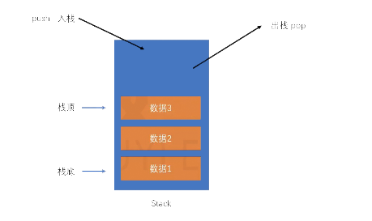
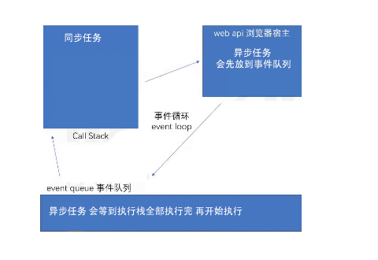
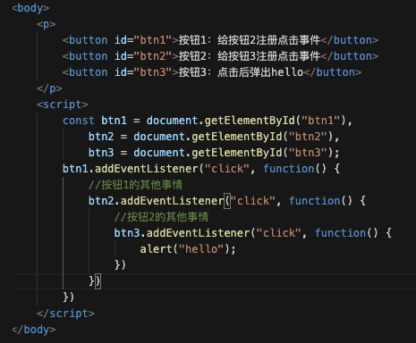
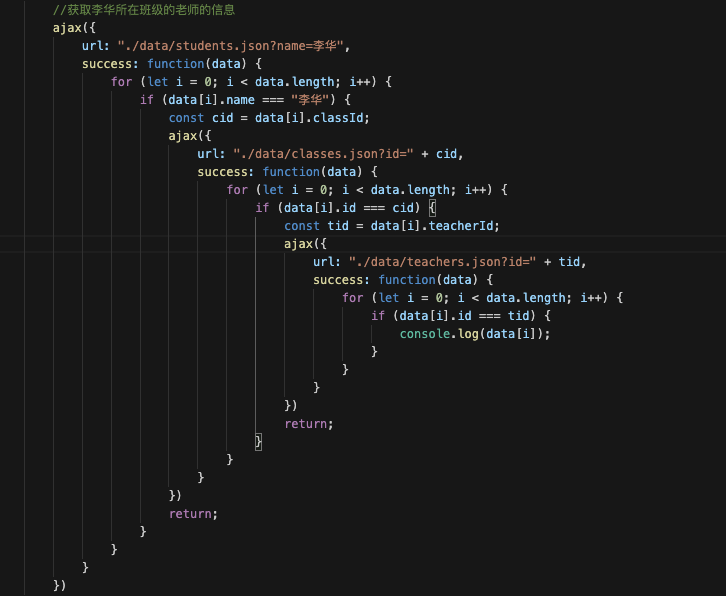
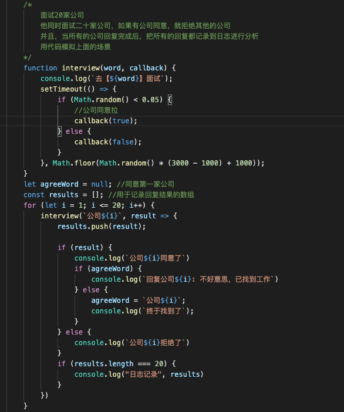
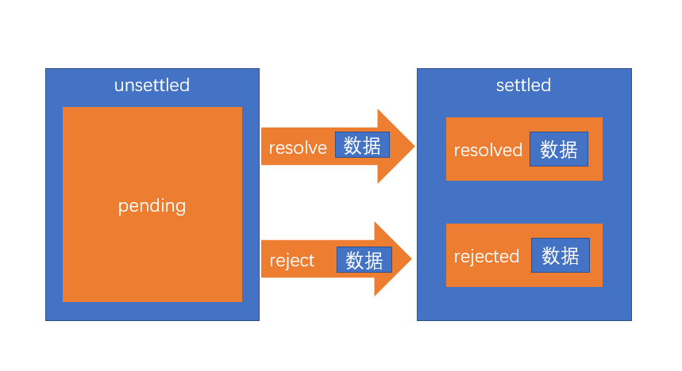

事件循环小例子
// 例子1
console.log("a");
setTimeout(() => {
console.log("b");
}, 0);
console.log("c")
答案： a c b
// 例子2
console.log("a");
setTimeout(() => {
console.log("b");
}, 0);
for(let i = 0; i < 1000; i++) {
console.log("c")
}
答案：a 1000个c b【回顾】事件循环
JS运行的环境称之为宿主环境
执行栈：call、stack，一个数据结构，用于存放各种函数的执行环境，每一个函数执行之前，它的相关信息会加入到执行栈。函数调用之前，创建执行环境，然后加入得到执行栈；函数调用之后，销毁执行环境。
栈：

JS引擎永远执行的是执行栈的最顶部
异步函数：某些函数不会立即执行，需要等到某个时机到达后才会执行，这样的函数称之为异步函数。比如时间处理函数。异步函数的执行时机，会被宿主环境控制
异步函数过程：

浏览器宿主环境中包含5个线程：
- JS引擎：负责执行执行栈的最顶部代码
- GUI线程：负责渲染页面
- 时间监听线程： 负责监听各种事件
- 计时线程：负责计时
- 网络线程：负责网络通信
当上面的线程发生了某些事情，如果该线程发现，这件事情有处理程序，它会将该处理程序加入一个叫做事件队列的内存。当JS引擎发现，执行栈中已经没用了任何内容后，会将事件队列中的第一个函数加入到执行栈中执行。
JS引擎对事件队列的取出执行方式，以及与宿主环境的配合，称之为事件循环。
事件队列在不同宿主环境汇总有所差异，大部分宿主环境会将事件队列进行细分。在浏览器中，事件队列分为两种：
- 宏任务（队列）：macroTask，计时器结束的回调、事件回调、http回调等等绝大部分异步函数进入宏队列
- 微任务（队列）：MutationObserver，Promisee产生的回调进入微队列
有宏任务和微任务：
MutationObserver用于监听某个DOM对象的变化
当执行栈清空时，JS引擎首先会将微任务中的所有任务依次执行结束，如果没有微任务，则执行宏任务。
let count = 1;
const ul = document.getElementById('container');
document.getElementById("btn").onclick = function A() {
setTimeout(function() C() { //异步 放到宏队列
console.log("添加了一个li")
}， 0);
var li = document.createElement("li");
li.innerText = count++;
ul.appendChild(li)
}
//监听ul
const observer = new MutationObserver(function B() { //异步 放到微队列
//当监听的dom元素发生变化时运行的回调函数
console.log("ul元素发生了变化")
})
//监听ul
observer.observe(ul, {
attributes: true, //监听属性的变化
childList: true, //监听子元素的变化
subtree: true //监听子树的变化
})
// ul元素发生了变化, 添加了一个li事件和回调函数的缺陷
我们习惯于使用传统的回调或事件处理来解决异步问题
事件：某个对象的属性是一个函数，当发生某一件事时，运行该函数
dom.onclick = function(){
}回调：运行某个函数以实现某个功能的时候，传入一个函数作为参数，当发生某件事的时候，会运行该函数。
dom.addEventListener("click", function(){
})本质上，事件和回调并没有本质的区别，只是把函数放置的位置不同而已。
一直以来，该模式都运作良好。
直到前端工程越来越复杂…
目前，该模式主要面临以下两个问题：
- 回调地狱：某个异步操作需要等待之前的异步操作完成，无论用回调还是事件，都会陷入不断的嵌套
- 异步之间的联系：某个异步操作要等待多个异步操作的结果，对这种联系的处理，会让代码的复杂度剧增
缺陷例子
1.按钮嵌套按钮 看起来不易阅读

2.不断嵌套函数 代码冗余

3.模拟ajax 嵌套请求

4.异步之间的联系

异步处理的通用模型
ES官方参考了大量的异步场景，总结出了一套异步的通用模型，该模型可以覆盖几乎所有的异步场景，甚至是同步场景。
值得注意的是，为了兼容旧系统，ES6 并不打算抛弃掉过去的做法，只是基于该模型推出一个全新的 API，使用该API，会让异步处理更加的简洁优雅。
- ES6 将某一件可能发生异步操作的事情，分为两个阶段：unsettled 和 settled

- unsettled： 未决阶段，表示事情还在进行前期的处理，并没有发生通向结果的那件事
- settled：已决阶段，事情已经有了一个结果，不管这个结果是好是坏，整件事情无法逆转
事情总是从 未决阶段 逐步发展到 已决阶段的。并且，未决阶段拥有控制何时通向已决阶段的能力。
- ES6将事情划分为三种状态： pending、resolved、rejected
- pending: 挂起，处于未决阶段，则表示这件事情还在挂起（最终的结果还没出来）
- resolved：已处理，已决阶段的一种状态，表示整件事情已经出现结果，并是一个可以按照正常逻辑进行下去的结果
- rejected：已拒绝，已决阶段的一种状态，表示整件事情已经出现结果，并是一个无法按照正常逻辑进行下去的结果，通常用于表示有一个错误
既然未决阶段有权力决定事情的走向，因此，未决阶段可以决定事情最终的状态！
我们将 把事情变为resolved状态的过程叫做：resolve，推向该状态时，可能会传递一些数据
我们将 把事情变为rejected状态的过程叫做：reject，推向该状态时，同样可能会传递一些数据，通常为错误信息
无论是阶段，还是状态，是不可逆的！

- 当事情达到已决阶段后，通常需要进行后续处理，不同的已决状态，决定了不同的后续处理。
- resolved状态：这是一个正常的已决状态，后续处理表示为 thenable
- rejected状态：这是一个非正常的已决状态，后续处理表示为 catchable
后续处理可能有多个，因此会形成作业队列，这些后续处理会按照顺序，当状态到达后依次执行

- 整件事称之为Promise